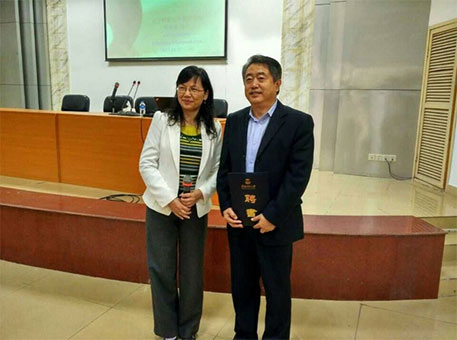

河北能源职业技术学院占地面积28万平方米，建筑面积18万平方米，其中校舍建筑面积14万平方米。学院具有较强的师资队伍，现有教职工总数525人，其中专任教师326人，教授25人，副高职称以上的154人，占专任教师的47%；“双师素质”教师达53%以上；兼职教师均具备中高级以上专业技术职称，其中具有高级职称兼职教师达40.63%。


2020-12-01
11月27日上午，辽宁师范大学张桂春教授受聘为华南师范大学职业教育学院客座教授。聘任仪式由职业教育学院副院长李娅玲教授主持，李娅玲副院长代表学校颁发聘书，职业教育学院师生200余人共同见证了这一仪式。客座教授聘任仪式结束后，张桂春教授做了题为《职业教育专业学（习）者成才的目标与路径》的精彩讲座，并与师生进行了广泛、热烈的互动。
张桂春教授现为《教育科学》杂志副主编、中国教育学会教育实验研究分会常务理事、中国高等教育学会师范教育分会常务理事、中国职业技术教育学会学术委员会委员、中国教育学会比较教育分会理事、辽宁省职业技术教育学会副会长、辽宁省高等教育学会和比较教育学会理事兼副秘书长。
张桂春教授主持国家社科基金项目、全国教育科学规划项目、教育部人文社科基金项目、辽宁省社科基金项目等多项，在多种刊物上发表论文80余篇。